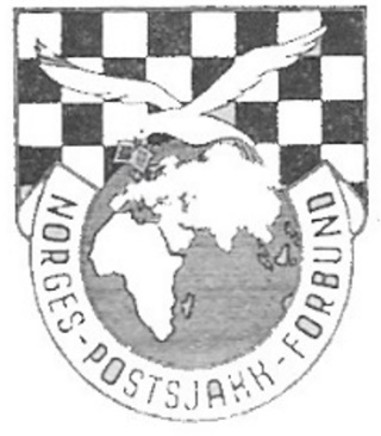

Introduction
The Norwegian Correspondence Chess Federation (Norges Postsjakkforbund, NPSF) was founded on 1 September 1945. Emerging from the Norwegian Correspondence Chess Club, it quickly became the national home of postal chess players and developed into one of the strongest correspondence chess organizations in Scandinavia.

Timeline 1945–1956
1945 – Foundation of NPSF
Founded in Oslo under the leadership of Sverre Madsen. The organization adopted the name Norges Postsjakkforbund and joined the Norwegian Chess Federation.
1946 – John S. Syversen Elected President
After brief terms by Sverre Madsen and Axel Frantzen, John S. Syversen of Sarpsborg became president and would lead the federation for the next twenty years.
1947 – Organizational Reform
Rapid growth forced the federation to rewrite its rules and tournament regulations. A week‑long board meeting near Sarpsborg modernized the organization.
1948–1949 – Expansion
Membership increased dramatically. New editors, officers and tournament directors were appointed, while Postsjakk magazine became the heart of the organization.
1951 – More Than 700 Members
The federation reached over 700 registered members and expanded international competition and team matches.
1954 – The Sarpsborg Era Begins
A new board concentrated leadership in Sarpsborg, creating a more efficient administration and marking the beginning of a new period in the federation's history.
Key Personalities
- Sverre Madsen – Founder and first president.
- Axel Frantzen – Early vice president and president.
- John S. Syversen – President from 1946 to 1966.
- Olaf Barda – Tournament director and leading Norwegian master.
- Sverre Halvorsen – Editor of Postsjakk and influential mediator.
- Per Øverbyhagen – Tournament organizer and Nordic cooperation advocate.
Community and Innovation
The federation was more than a chess organization. Members created “wandering books”, travelling notebooks where games, comments and tournament news were shared. The magazine Postsjakk connected players across the country, and a strong culture of solidarity developed among members.
Gallery



Legacy
Between 1945 and 1956 the federation evolved from a small group of enthusiasts into a national chess organization with hundreds of members, extensive tournament activity and growing international recognition. The foundations created during this period shaped Norwegian correspondence chess for decades to come.
Back to Chess Without Borders